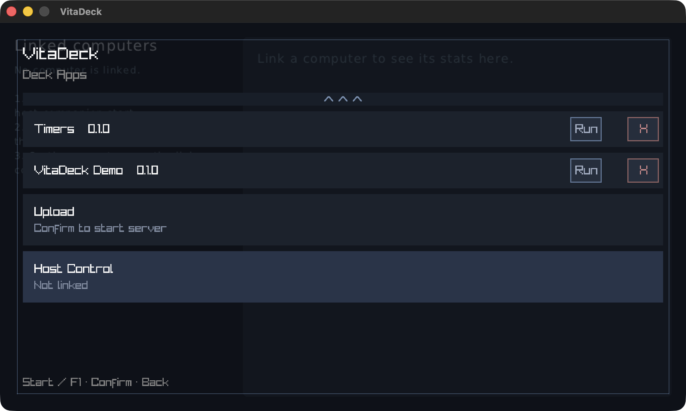
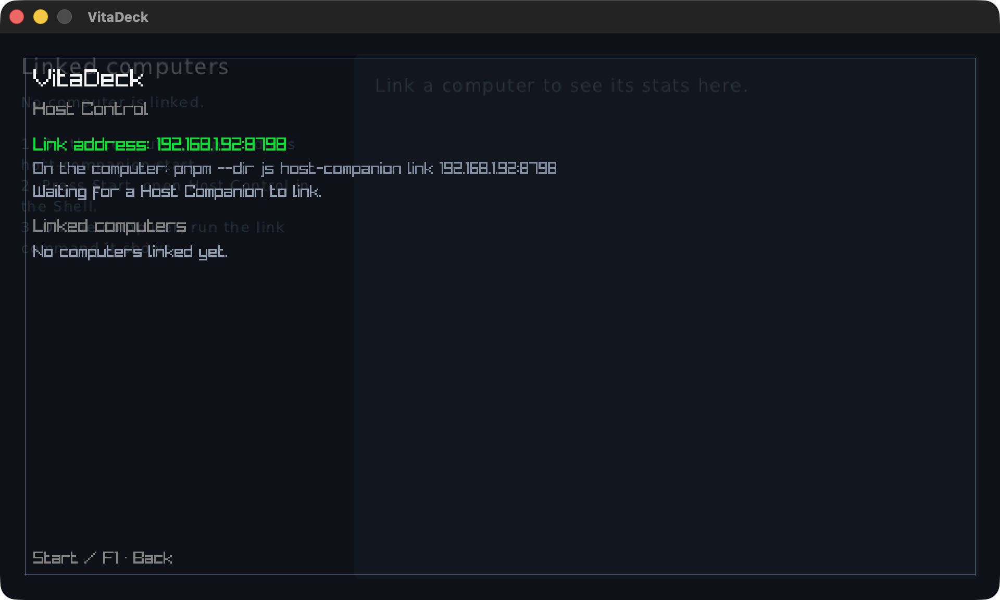
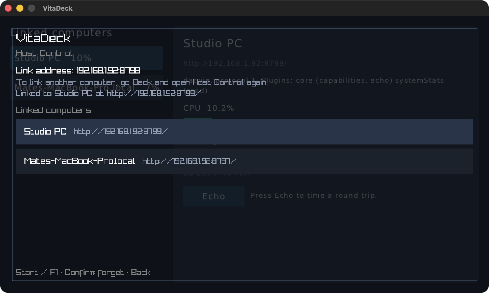
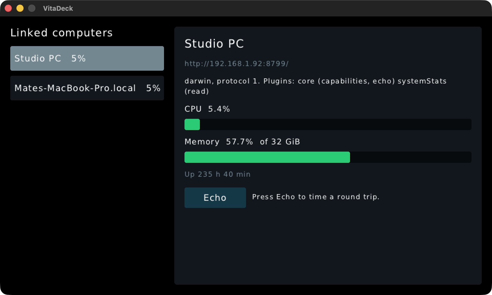
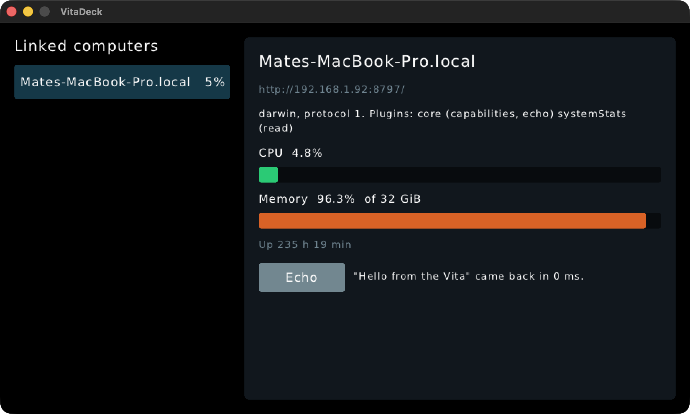
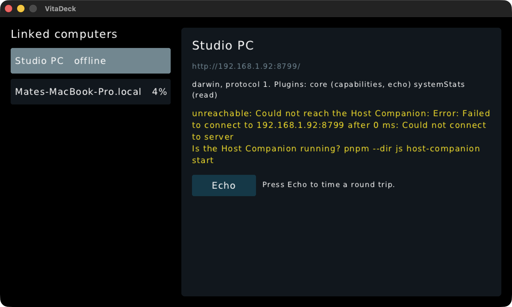
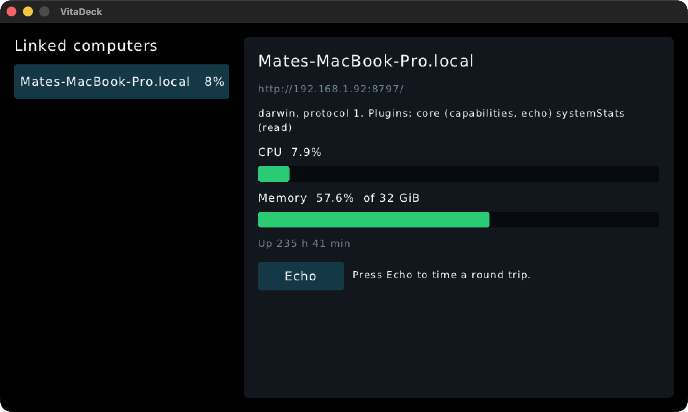

Host Control: macOS host window
Shell Home: new Host Control entry

Shell Host Control Screen, listening

Two computers linked; listener stopped

Demo Deck App, two hosts with live CPU

Echo round trip

Companion stopped: unreachable

After forgetting a link in the Shell
